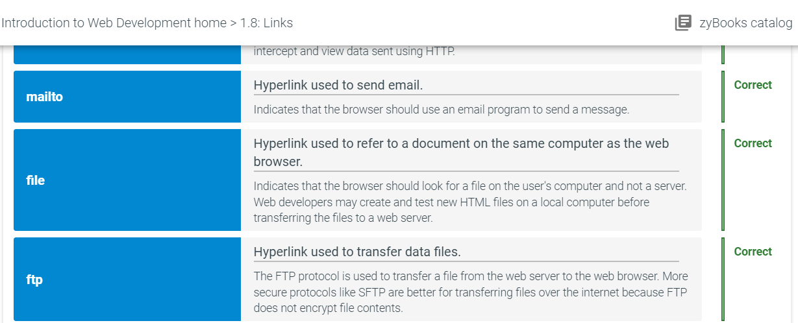
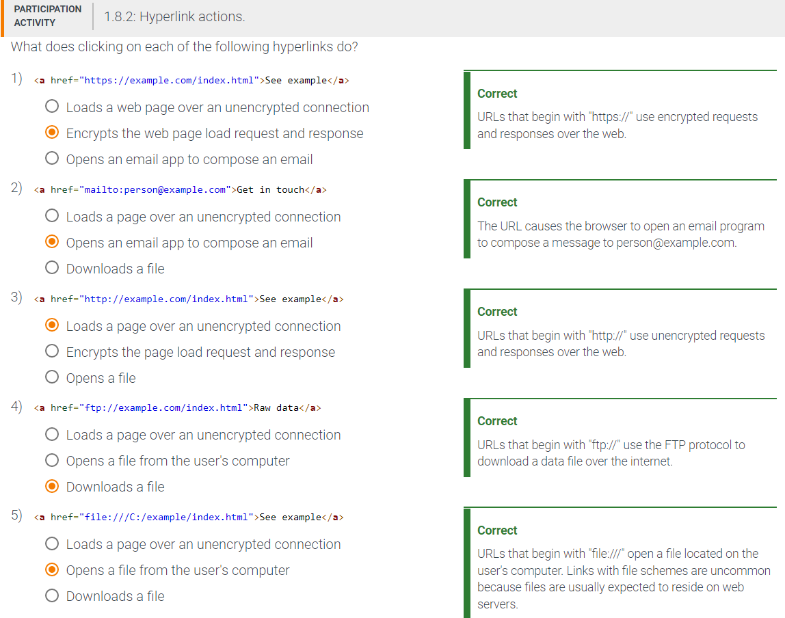
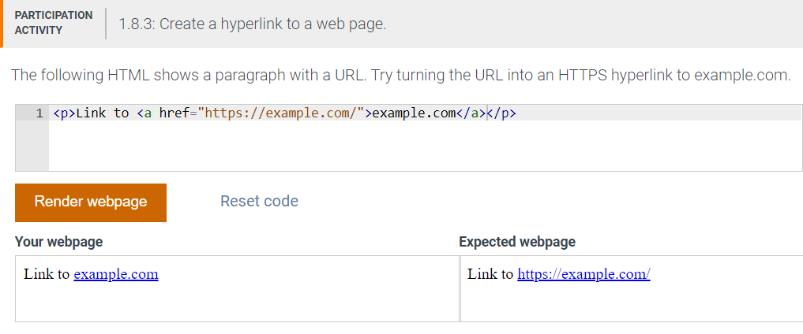
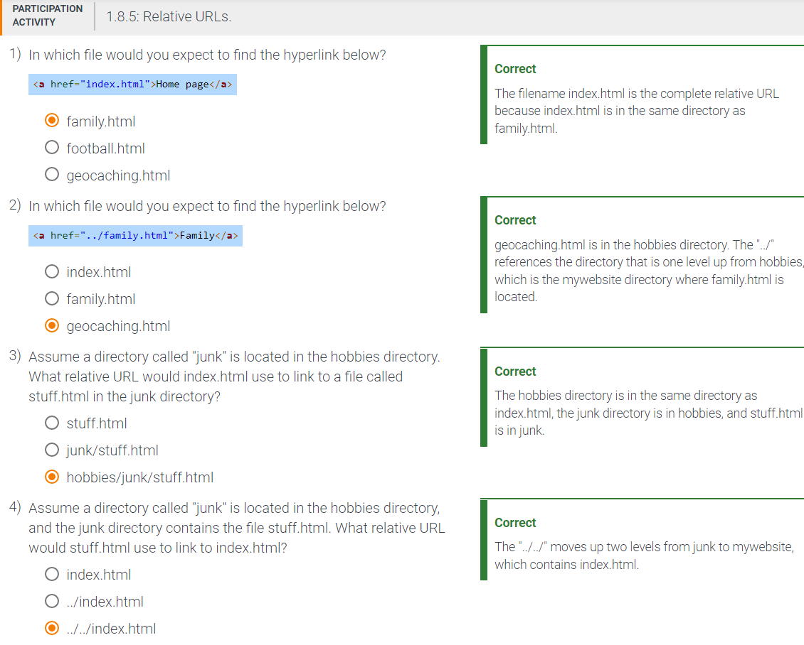
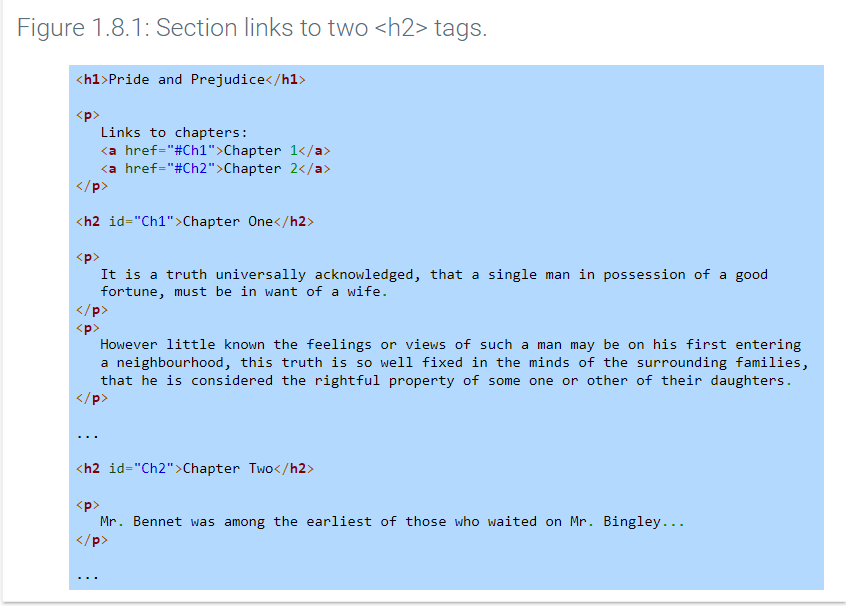
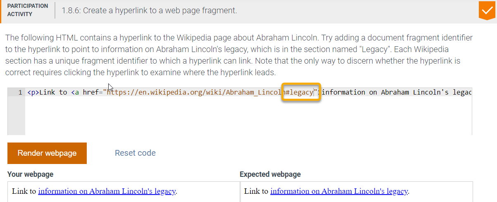
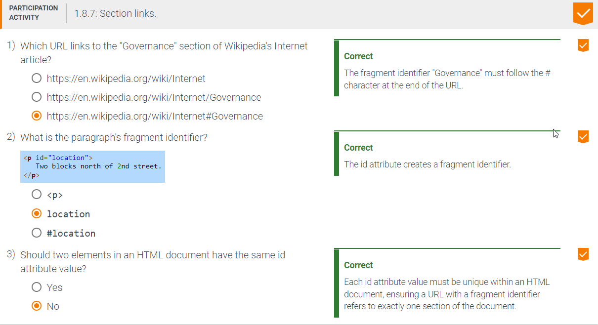
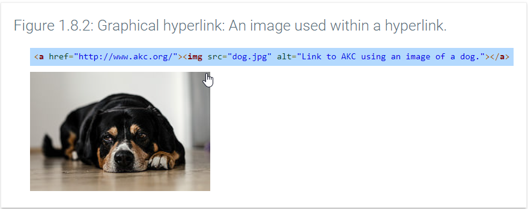
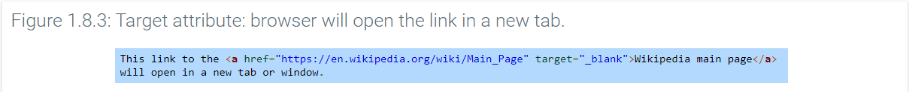
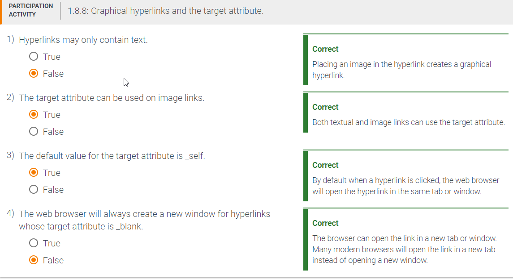

The anchor tag a defines a hyperlink in a web page. A hyperlink, or link, specifies where other information is located and what action the web browser should perform when a user clicks the hyperlink. A hyperlink action may tell the web browser to go to another web page, to go to a location in the same web page, to download a file, or to send an email.
A hyperlink has three parts: the opening tag with the href attribute, the content displayed for the link , and the closing tag. The href attribute specifies the hyperlink's URL. Ex: Wikipedia displays the hyperlink Wikipedia and causes the browser to request the URL https://wikipedia.org/ when the hyperlink is clicked. Other URL schemes may cause the browser to take different actions. Ex: The URL mailto:mary@gmail.com uses the mailto scheme that directs the browser to start an email program and address an email to mary@gmail.com.



Absolute and relative URLs
When a web page links to web resources on the same website, a relative URL may be specified in the href attribute instead of an absolute URL.
A relative URL may use two periods followed by a forward slash (../) in front of a filename to indicate the file is one directory above the current HTML document. Ex: The relative URL ../test.html indicates test.html is in the directory above the HTML document containing the link.

Section links
A URL can point to a section, or fragment, of a document by adding a hash tag (#) and a fragment identifier at the end of the URL. Ex: https://en.wikipedia.org/wiki/Computer_science#History refers to the "History" section of the "Computer_science" page on Wikipedia.
Adding the id attribute to any HTML tag creates a fragment identifier, permitting URLs to link directly to the id's location in the document. The HTML in the figure below creates two section links to the h2 tags with fragment identifiers "Ch1" and "Ch2".



Image links and targets
The content in a hyperlink may be any valid HTML or text. A graphical hyperlink or image link uses an image inside a hyperlink instead of text. Ex: The HTML below uses an image of a dog that links to the American Kennel Club.

An anchor tag's target attribute indicates how the browser should display the link when clicked.



Challenge 1-8-1:
Use a fragment to link directly to the section with the fragment identifier: Life
https://en.wikipedia.org/wiki/Aristotle#Life
Modify the link to open in a new tab.
Add a space then target="_blank" in the anchor / hyperlink